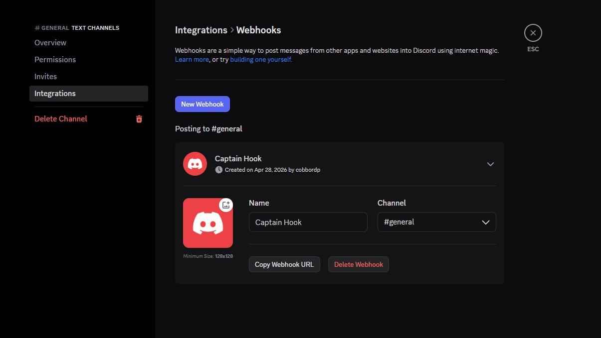
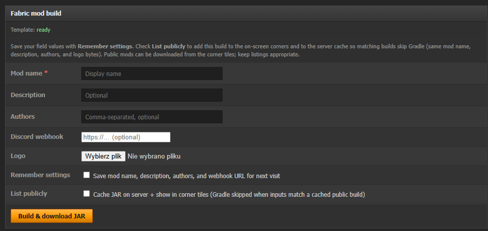

← Wszystkie dokumenty
r%t-mod — konfiguracja
Szybki poradnik: logowanie do panelu, zmiana hasła, utworzenie webhooka Discord i wklejenie danych do Build Fabric.
1. Zaloguj się do panelu
- Wejdź na stronę: cp.amnesia.zip (otworzy się w nowej karcie).
- Jeśli pojawi się ekran weryfikacji, kliknij Continue, a następnie zaloguj się na swoje konto.
2. Zmień hasło po zalogowaniu
- Po zalogowaniu przejdź do Profile & settings.
- Wybierz zmianę hasła, wpisz nowe hasło i zatwierdź.
3. Stwórz webhooka Discord
- Wejdź na swój serwer Discord.
- Utwórz kanał tekstowy, np.
logs.
- Wejdź w edycję kanału i otwórz sekcję Integrations (tak jak na screenie
discordwebhook.png).
- Kliknij Create Webhook.
- Skopiuj Webhook URL.

Podgląd ustawień Discord: przejdź do Integrations i utwórz webhook.
4. Wpisz dane w Build Fabric
- Otwórz menu Build Fabric.
- Wklej skopiowany Webhook URL w odpowiednie pole.
- Zapisz zmiany.

W Build Fabric wklej skopiowany Webhook URL i zapisz konfigurację.
5. Logowanie przez sessionid
- Pobierz klienta Minecraft: litemclauncher.msi.
- Przejdź przez instalację.
- Wklej token w pole:
Microsoft Session Login oraz Paste your Minecraft session token (JWT):.
- Kliknij Launch.
Jeśli webhook nie działa od razu, sprawdź czy URL został skopiowany w całości i czy kanał Discord nadal istnieje.